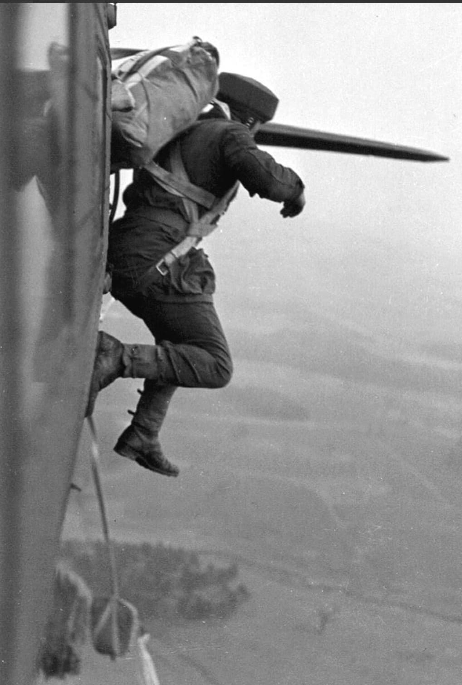
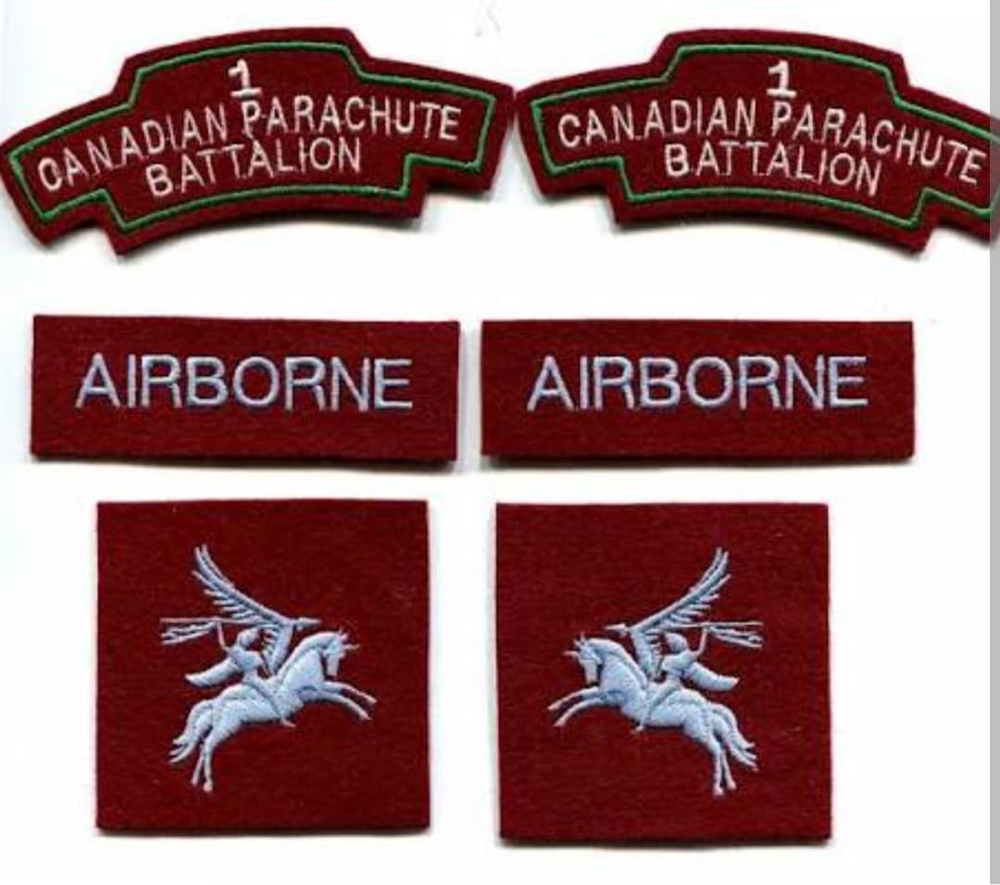
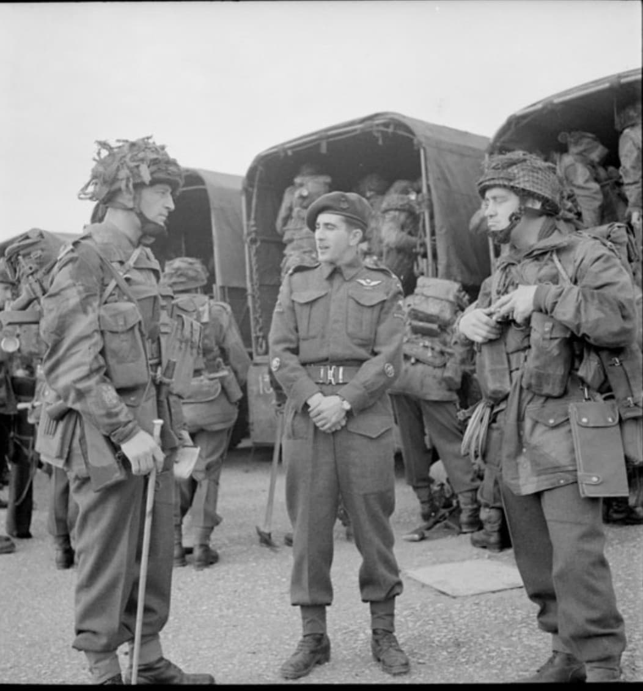

Les pionniers de l'air canadiens : du saut nocturne décisif sur Pegasus Bridge au plus grand assaut aéroporté de l'histoire lors de l'opération Varsity

Le 1st Canadian Parachute Battalion (1er bataillon de parachutistes canadien) est l'une des unités d'infanterie aéroportée les plus redoutables et admirées des forces armées alliées durant la Seconde Guerre mondiale.
Intégré au sein de la prestigieuse 6th Airborne Division britannique, ce bataillon d'élite a sauté dans le ciel normand aux toutes premières heures du 6 juin 1944, accomplissant des missions d'une importance vitale pour la réussite du Débarquement avant de s'illustrer jusqu'au cœur de l'Allemagne.
Formé à l'été 1942 à partir de volontaires venus de tout le Canada, le bataillon subit un entraînement commando d'une exigence extrême à Fort Benning aux États-Unis, puis au camp Shilo et au Royaume-Uni. Souvent surnommés les « canards sauvages », ces hommes brillent par leur condition physique hors norme et leur autonomie au combat.
Leurs uniformes et bérets arborent fièrement l'insigne ailé des parachutistes canadiens, symbole de leur engagement dans la toute première unité de saut de l'histoire militaire du pays.

Dans la nuit du **5 au 6 juin 1944**, le 1st Canadian Parachute Battalion s'élance de ses bases aériennes anglaises à bord de bombardiers Dakota modifiés. Malgré une dispersion importante due à une météo difficile et aux tirs de la Flak allemande, les parachutistes se regroupent rapidement sur le terrain.
Leur mission prioritaire : faire sauter les ponts de la rivière Dives et neutraliser les redoutables batteries d'artillerie menaçant le secteur de **Pegasus Bridge** et la zone d'atterrissage. Malgré des pertes sévères dans les marécages et face aux contre-attaques ennemies, le bataillon remplit l'ensemble de ses objectifs avec panache.

Après les combats de Normandie, le bataillon est engagé dans les Ardennes en hiver 1944, avant de participer à son ultime et plus grand fait d'armes le 24 mars 1945 : l'Opération Varsity.
Sautant en plein jour au-delà du Rhin aux côtés des parachutistes britanniques et américains, les Canadiens s'emparent de leurs objectifs malgré un feu nourri, contribuant de façon décisive à l'ouverture de la route de l'Allemagne du Nord jusqu'à la fin de la guerre.
Page du Musée HOP WW2 – Section Unités & Divisions